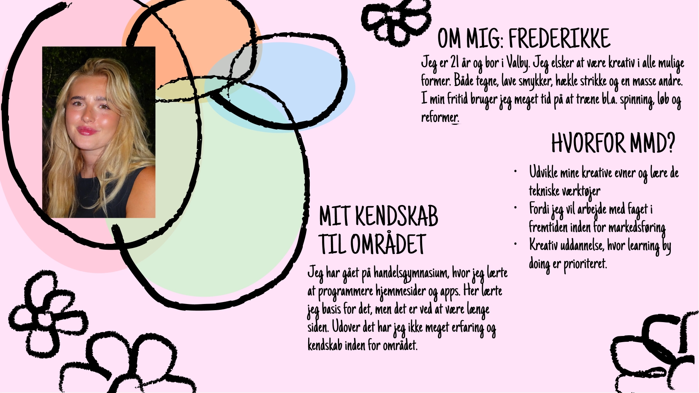
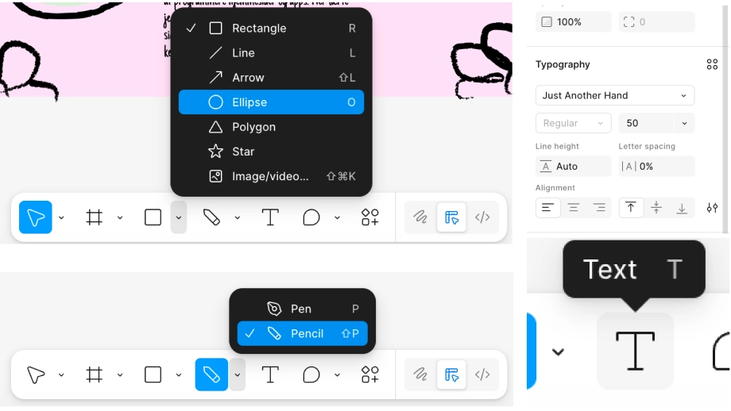
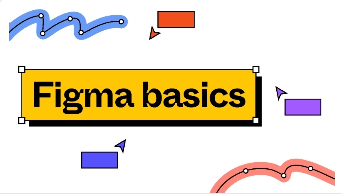

INTROUGE
LØSNING
LØSNING
I intro-ugen arbejdede vi med små øvelser, der skulle give os en blid start på uddannelsen og de værktøjer, vi kommer til at bruge.
LÆS MEREFIGMA
Som en del af ugen lavede vi et præsentationskort af os selv i Figma, som havde fokus på at lære programmet at kende og arbejde med simple visuelle elementer.
MÅLET
Opgaven var ikke at lave et færdigt designprodukt, men at få en første forståelse for værktøjet og for, hvordan vi kommer til at arbejde med design fremadrettet.
VIS MINDREPROCES
PROCES
Ugen bestod primært af oplæg og introduktioner. Vi blev introduceret til uddannelsen, underviserne og EK som organisation, og vi hørte oplæg fra tidligere multimediedesignere, som gav inspiration til mulige brancher og jobfunktioner.
LÆS MEREIDEUDVIKLING
Derudover arbejdede vi med de første øvelser i Figma og blev introduceret til idéudvikling, så vi fik en forståelse for, hvordan man kan tænke kreativt og struktureret, før man går i gang med design og produktion.
VIS MINDRELÆRING
LÆRING
Intro-ugen gav mig et overblik over, hvad multimediedesign dækker over, og hvilke fagområder og roller der er en del af uddannelsen. Jeg fik en grundlæggende forståelse for arbejdsgangen på studiet og de værktøjer, vi kommer til at bruge.
LÆS MEREFORSTÅELSE
Selvom ugen ikke var produktions-tung, var den vigtig for at skabe en fælles forståelse, forventningsafstemning og et fundament for resten af semesteret.
VIS MINDRE